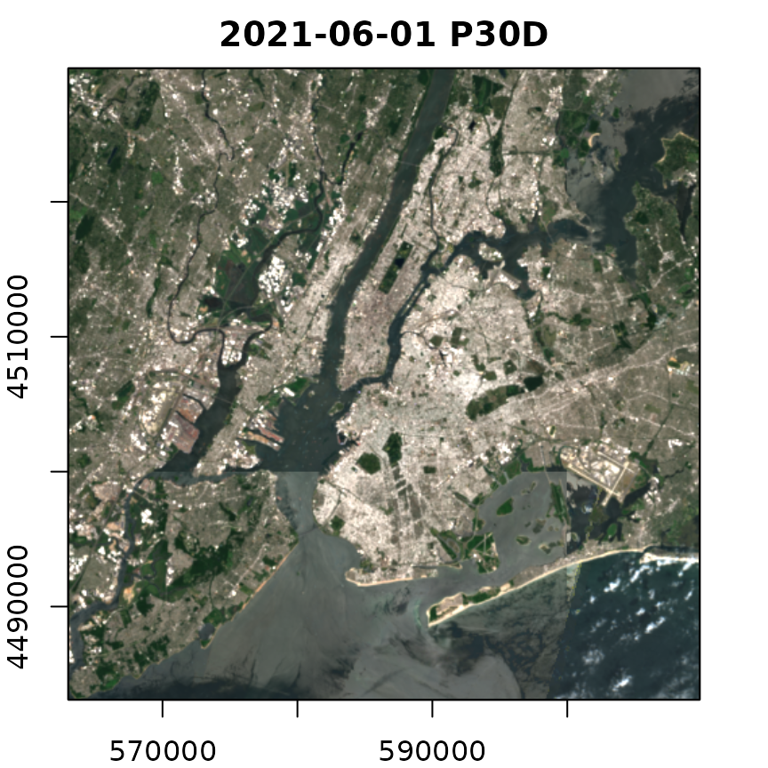
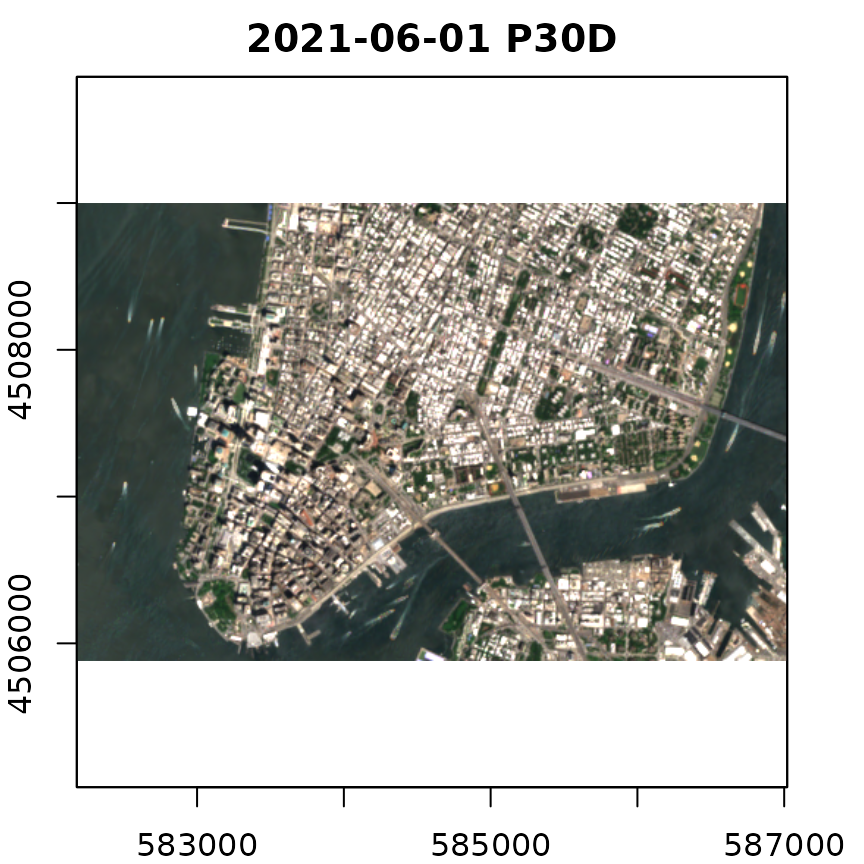

2. Data cubes from Sentinel-2 data in the cloud
Marius Appel
Source:vignettes/gc02_AWS_Sentinel2.Rmd
gc02_AWS_Sentinel2.RmdMany cloud computing providers contain large catalogs of satellite imagery as from the Sentinel-2 satellites. To avoid downloading hundreds of images (and gigabytes) from portals, one can directly run a machine on a cloud platform and run the analysis without any downloads before. Fortunately, this has recently been made much easier and more efficient due to the development and popularity of the cloud-optimized GeoTIFF image format and the SpatioTemporal Asset Catalog (STAC).
This vignette will not explain any details the specifications but demonstrate how they can be used in combination with gdalcubes and the rstac package. We will use the freely available Sentinel-2 COG catalog on Amazon Web Services (AWS) and the corresponding STAC-API endpoint at https://earth-search.aws.element84.com/v0/collections/sentinel-s2-l2a.
Notice that this vignette in principle runs anywhere but computations take much longer when not working on an AWS machine in the region of the data catalog (in this case us-west-2).
Finding images with rstac
As an example, we are interested in cloud-free images of New York City in June, 2021. We can use the NYC administrative polygons that are shipped as example data with the package and use the (sf)[https://cran.r-project.org/package=sf] package for reading and calculating the bounding box.
library(sf)
## Linking to GEOS 3.10.1, GDAL 3.4.0, PROJ 8.2.0; sf_use_s2() is TRUE
nyc_shape = read_sf(system.file("nycd.gpkg",package = "gdalcubes"))
bbox = st_bbox(nyc_shape)
bbox
## xmin ymin xmax ymax
## 563069.9 4483098.0 609761.1 4529895.0To ask the STACK endpoints for available images intersecting with our area of interest, we need to provide the bounding box in WGS84 (latitude / longitude) coordinates, which we can calculate with:
nyc_shape |>
st_transform("EPSG:4326") |>
st_bbox() -> bbox_wgs84
bbox_wgs84
## xmin ymin xmax ymax
## -74.25559 40.49614 -73.70002 40.91500Next, we load the rstac package, specify the STAC-API endpoint URL and query all available images for our area and time of interest.
library(rstac)
s = stac("https://earth-search.aws.element84.com/v0")
items = s |>
stac_search(collections = "sentinel-s2-l2a-cogs",
bbox = c(bbox_wgs84["xmin"],bbox_wgs84["ymin"],
bbox_wgs84["xmax"],bbox_wgs84["ymax"]),
datetime = "2021-06-01/2021-06-30") |>
post_request() |> items_fetch(progress = FALSE)
length(items$features)
## [1] 48As a result, we get a list with metadata and URLs pointing to 48 images. This list is an index-like object pointing to original images on a AWS S3 bucket and hence somewhat similar to gdalcubes image collections.
Converting STAC items to image collections
We can convert the STAC response to a gdalcubes image collections using stac_image_collection(). This function expects a STAC feature list as input and optionally can apply some filters on metadata and bands. Notice that this operation is much faster than the creation of image collections from local files, because all metadata are already available and no image file must be opened. Below, we create a collection for images with less than 10% cloud cover.
library(gdalcubes)
s2_collection = stac_image_collection(items$features, property_filter = function(x) {x[["eo:cloud_cover"]] < 10})
s2_collection
## Image collection object, referencing 16 images with 18 bands
## Images:
## name left top bottom right
## 1 S2B_18TWK_20210629_0_L2A -75.00023 40.65085 39.65842 -73.78649
## 2 S2B_18TXK_20210629_0_L2A -73.81752 40.64478 40.55838 -73.78649
## 3 S2B_18TWL_20210629_0_L2A -75.00023 41.55184 40.55671 -73.68381
## 4 S2B_18TXL_20210629_0_L2A -73.81884 41.54559 40.55671 -73.45793
## 5 S2A_18TWK_20210624_0_L2A -75.00023 40.65085 39.65836 -73.77774
## 6 S2A_18TXK_20210624_0_L2A -73.81796 40.64478 40.53306 -73.77774
## datetime srs
## 1 2021-06-29T16:02:02 EPSG:32618
## 2 2021-06-29T16:01:52 EPSG:32618
## 3 2021-06-29T16:01:48 EPSG:32618
## 4 2021-06-29T16:01:42 EPSG:32618
## 5 2021-06-24T16:02:02 EPSG:32618
## 6 2021-06-24T16:01:52 EPSG:32618
## [ omitted 10 images ]
##
## Bands:
## name offset scale unit nodata image_count
## 1 B01 0 1 16
## 2 B02 0 1 16
## 3 B03 0 1 16
## 4 B04 0 1 16
## 5 B05 0 1 16
## 6 B06 0 1 16
## 7 B07 0 1 16
## 8 B08 0 1 16
## 9 B09 0 1 16
## 10 B11 0 1 16
## 11 B12 0 1 16
## 12 B8A 0 1 16
## 13 overview:B02 0 1 16
## 14 overview:B03 0 1 16
## 15 overview:B04 0 1 16
## 16 visual:B02 0 1 16
## 17 visual:B03 0 1 16
## 18 visual:B04 0 1 16The collection contains 16 images and all spectral bands plus some RGB preview images. However, the scene classification layer (SCL) containing pixel-wise information whether a pixel shows a cloud, cloud-shadow, water, or something else, is missing. Although the SCL images are available in the returned STAC list, the response does not include all of the metadata to let gdalcubes recognize it as an image. However, it is possible to explicitly list the names of all bands to be included in the collection by adding the asset_names argument:
assets = c("B01","B02","B03","B04","B05","B06", "B07","B08","B8A","B09","B11","SCL")
s2_collection = stac_image_collection(items$features, asset_names = assets, property_filter =
function(x) {x[["eo:cloud_cover"]] < 10})
s2_collection
## Image collection object, referencing 16 images with 12 bands
## Images:
## name left top bottom right
## 1 S2B_18TWK_20210629_0_L2A -75.00023 40.65085 39.65842 -73.78649
## 2 S2B_18TXK_20210629_0_L2A -73.81752 40.64478 40.55838 -73.78649
## 3 S2B_18TWL_20210629_0_L2A -75.00023 41.55184 40.55671 -73.68381
## 4 S2B_18TXL_20210629_0_L2A -73.81884 41.54559 40.55671 -73.45793
## 5 S2A_18TWK_20210624_0_L2A -75.00023 40.65085 39.65836 -73.77774
## 6 S2A_18TXK_20210624_0_L2A -73.81796 40.64478 40.53306 -73.77774
## datetime srs
## 1 2021-06-29T16:02:02 EPSG:32618
## 2 2021-06-29T16:01:52 EPSG:32618
## 3 2021-06-29T16:01:48 EPSG:32618
## 4 2021-06-29T16:01:42 EPSG:32618
## 5 2021-06-24T16:02:02 EPSG:32618
## 6 2021-06-24T16:01:52 EPSG:32618
## [ omitted 10 images ]
##
## Bands:
## name offset scale unit nodata image_count
## 1 B01 0 1 16
## 2 B02 0 1 16
## 3 B03 0 1 16
## 4 B04 0 1 16
## 5 B05 0 1 16
## 6 B06 0 1 16
## 7 B07 0 1 16
## 8 B08 0 1 16
## 9 B09 0 1 16
## 10 B11 0 1 16
## 11 B8A 0 1 16
## 12 SCL 0 1 16Creating and processing data cubes
Having an image collection object, we can now use gdalcubes in the same way as we do with local files. Particularly, we define a data cube view and maybe some additional data cube operations. In the following example, we create a coarse resolution (100m) simple median-composite RGB image from a daily data cube.
gdalcubes_options(parallel = 8)
v = cube_view(srs="EPSG:32618", dx=100, dy=100, dt="P1D",
aggregation="median", resampling = "average",
extent=list(t0 = "2021-06-01", t1 = "2021-06-30",
left=bbox["xmin"], right=bbox["xmax"],
top=bbox["ymax"], bottom=bbox["ymin"]))
v
## A data cube view object
##
## Dimensions:
## low high count pixel_size
## t 2021-06-01 2021-06-30 30 P1D
## y 4483096.51932691 4529896.51932691 468 100
## x 563065.499607774 609765.499607774 467 100
##
## SRS: "EPSG:32618"
## Temporal aggregation method: "median"
## Spatial resampling method: "average"
raster_cube(s2_collection, v) |>
select_bands(c("B02","B03","B04")) |>
reduce_time(c("median(B02)", "median(B03)", "median(B04)")) |>
plot(rgb = 3:1, zlim = c(0,2500)) Of course, we can “zoom in” to Lower Manhattan simply by changing the data cube view.
v = cube_view(srs="EPSG:32618", dx=10, dy=10, dt="P1D",
aggregation="median", resampling = "average",
extent=list(t0 = "2021-06-01", t1 = "2021-06-30",
left=582182, right=587019,
top=4508997, bottom=4505883))
v
## A data cube view object
##
## Dimensions:
## low high count pixel_size
## t 2021-06-01 2021-06-30 30 P1D
## y 4505880 4509000 312 10
## x 582180.5 587020.5 484 10
##
## SRS: "EPSG:32618"
## Temporal aggregation method: "median"
## Spatial resampling method: "average"
raster_cube(s2_collection, v) |>
select_bands(c("B02","B03","B04")) |>
reduce_time(c("median(B02)", "median(B03)", "median(B04)")) |>
plot(rgb = 3:1, zlim = c(0,2500))
For more complex examples, you can find a tutorial on YouTube and corresponding materials on GitHub how to use gdalcubes in the cloud, presented at the virtual OpenGeoHub Summer School 2021.
Summary
Thanks to STAC, cloud-optimized GeoTIFFs, and GDAL being capable of reading imagery from cloud storage directly, moving to cloud-based analysis workflows without downloading any imagery from portals become a lot easier and more efficient. Whether or not this is the right approach depends a lot on particular applications. In some cases (e.g. when having access to institutional HPC resources while applying very complex models on small areas of interest), it might still be appropriate to download the data once. The gdalcubes package still can help as an interface to downloading analysis-ready data cubes instead of image files from portals.